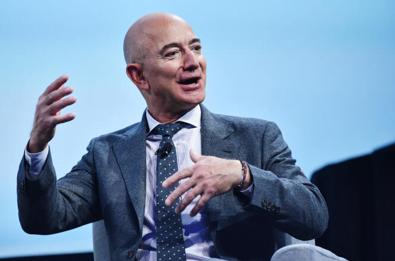

10 grandes emprendedores del mundo
Steve Jobs.

Bill Gates nació en una familia acomodada que le proporcionó una educación en centros de élite como la Escuela de Lakeside (1967-73) y la Universidad de Harvard (1973-77).
Siempre en colaboración con su amigo Paul Allen, se introdujo en el mundo de la informática formando un pequeño equipo dedicado a la realización de programas que vendían
a empresas o administraciones públicas.
Jeff Bezos

Jeffrey Preston Bezos es un empresario, ingeniero y magnate estadounidense, fundador, presidente ejecutivo y exdirector
de la empresa de venta en línea Amazon de la cual posee el 7%.En 2015 fue el quinto hombre más rico del mundo, y en 2017 alcanzó el primer puesto de la lista Forbes.
Steve Jobs
fue un influyente empresario y visionario tecnológico estadounidense nacido el 24 de febrero de 1955 en San Francisco, California, y fallecido el 5 de octubre de 2011 en Palo Alto, California.
Es ampliamente reconocido por su papel fundamental en la fundación y desarrollo de empresas emblemáticas de la industria tecnológica, especialmente Apple Inc.
Fred Smith
es considerado un emprendedor pionero en el mundo de la logística siendo el fundador de FedEx, primera empresa aérea y logística estadounidense en entregar paquetes de noche y revolucionar la industria.
El empresario es un auténtico líder carismático que inspira a otros a tomar riesgos y nunca rendirse en la búsqueda de sus sueños, a pesar de los retos de la vida.